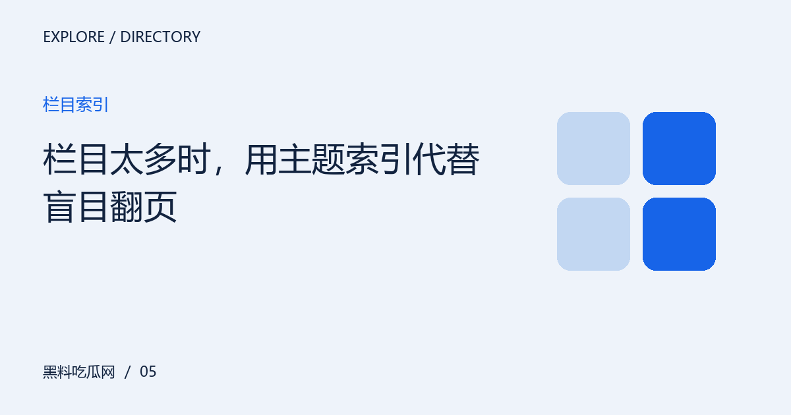
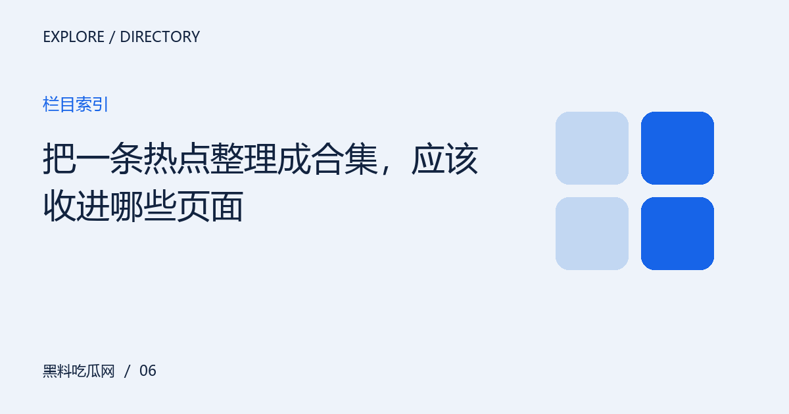
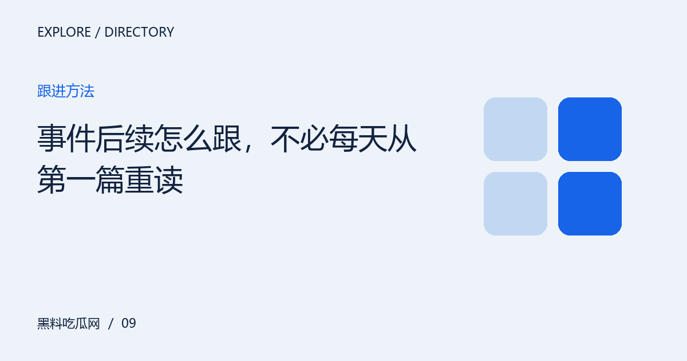
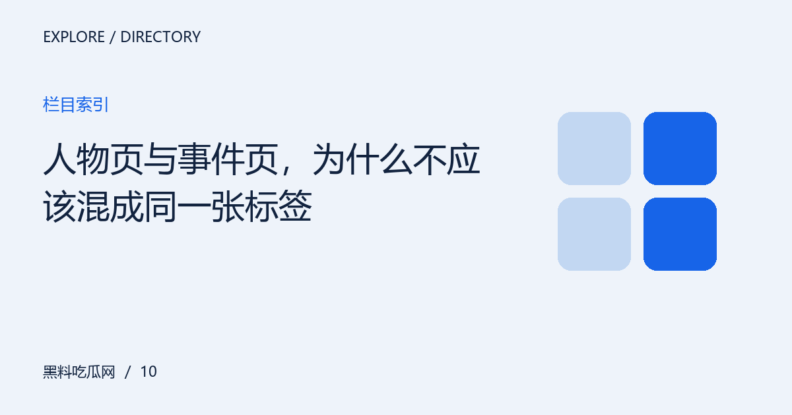
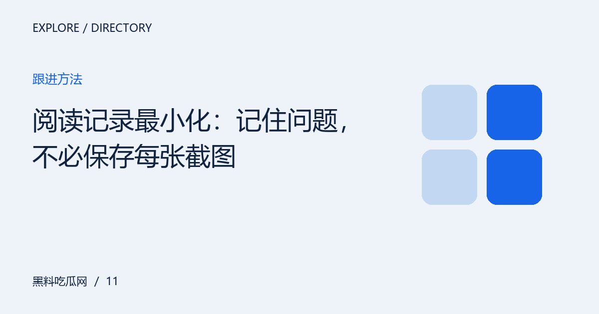
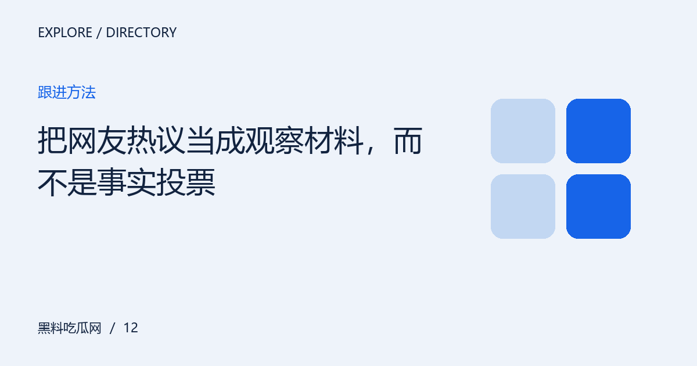

内容索引 / ARTICLE INDEX全部文章
按主题查找12篇编辑文章。搜索会在当前静态内容中匹配标题、摘要与栏目，无需后台服务。
全部12篇内容

访问指南从首页看重点，从栏目找兴趣，从合集补上下文，再用站内搜索定位具体问题。按阅读目的选择路径，少一些重复跳转。

移动阅读把小屏阅读拆成定位、通读与回看三步，兼顾字号、屏幕方向和链接打开方式，让信息不会散落在多个页面。

访问指南解释响应式站点的访问方式，区分页面布局变化、浏览器缩放和真正不同的内容版本，避免把设备差异当作地址失效。

访问指南从人物、主题和问题三个层次选择关键词，用逐步缩小范围的方法定位文章，而不是复制一整句话反复尝试。

栏目索引把栏目视为不同的阅读任务，而非必须逐个点击的菜单。通过主题索引识别重复入口、关联内容和可以跳过的部分。

栏目索引区分背景解释、事实材料、讨论视角和后续进展，建立有阅读顺序的合集，而不是把相关关键词全部堆在一页。

移动阅读从首页重新定位、查看地址和比较网络环境，建立简短排查顺序。不把每次失败都解释为换址，也不随意下载工具。

移动阅读让书签承担不同任务：保存固定文章便于回看，保存栏目便于继续探索。区分地址收藏与内容备份，减少失效后的困惑。

跟进方法用问题清单跟进后续，把新增事实与重复转述分开。每次打开相关内容，都知道这次究竟新增了什么。

栏目索引人物会参与多个事件，一个事件也涉及多方角色。把人物背景与单次事件分开，有助于避免用局部材料概括一个人。

跟进方法建立轻量的信息备忘，记录来源、问题和修订条件。减少无用途的截图堆积，也避免把私人信息带入公开讨论。

跟进方法讨论区可以帮助发现问题和不同理解，但支持人数、措辞强烈程度与事实可靠性没有简单对应关系。
没有匹配的文章。请更换关键词，或清空搜索查看全部内容。